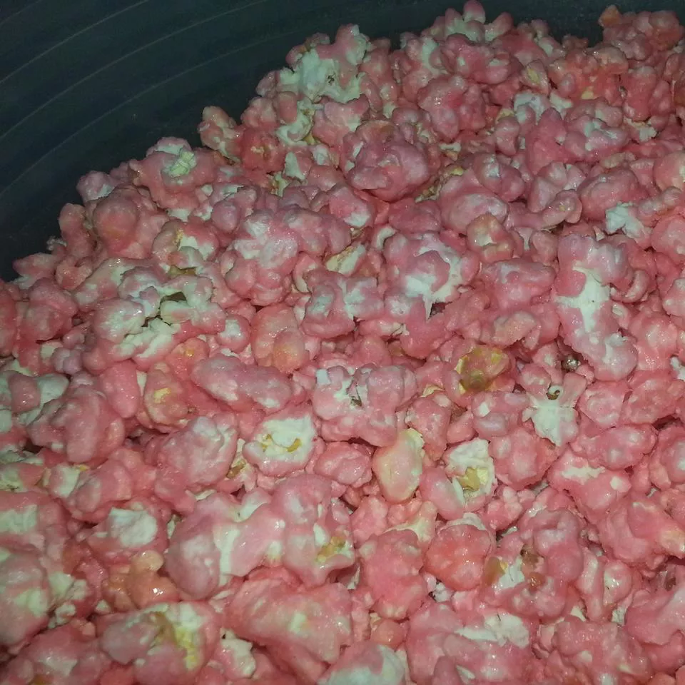

Kool-Aid® Popcorn

Description
You can't stop eating it! Enjoy!
Ingredients
- 6 quarts popped popcorn
- 2 cups white sugar
- 1 cup light corn syrup
- ⅔ cup butter
- 2 (.13 ounce) envelopes unsweetened soft drink mix,
any flavor (such as KOOL-AID®)
- 1 teaspoon baking soda
Steps
- Preheat oven to 225 degrees F (110 degrees C).
Grease a large baking sheet. Place popped popcorn in a large bowl.
- Combine sugar, corn syrup, and butter in a saucepan;
bring to a boil until sugar dissolves, about 3 minutes.
- Combine drink mix and baking soda in a large bowl;
pour sugar mixture into drink mixture, stirring carefully.
Sugar mixture will bubble. Pour mixture over popcorn;
toss to evenly coat. Transfer coated popcorn to baking sheet.
- Bake in the preheated oven, stirring every 10 minutes,
until coating has hardened, about 30 minutes.
Cool and break popcorn into pieces.